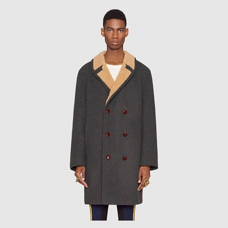
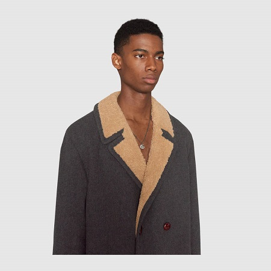

«Luxury must be comfortable, otherwise it is not luxury.» Coco Chanel


New
Felt coat with wool lining
Характеристики товара
Это двубортное пальто имеет подкладку из шкуры и шерсти. Круглые плечи и большие размеры подходят расслабленным людям. Кожаные тканые кнопки добавляют контраст против серого войлока.